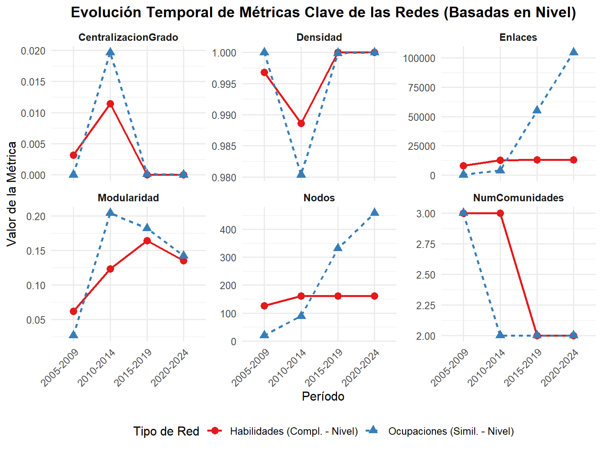

Análisis Descriptivo de Redes de Habilidades y Ocupaciones Basadas en Nivel Requerido (2005-2024)
Author
Roberto Cantillan
Published
April 16, 2025
1 Introducción
1.1 Relevancia y Justificación
La persistencia de la segregación ocupacional, a pesar de la disminución de barreras formales, presenta un enigma fundamental en la investigación sobre estratificación [@blau2017]. Comprender los mecanismos subyacentes que reproducen estas desigualdades es crucial. Trabajos recientes han revelado características estructurales clave del mercado laboral que informan este problema desde dos ángulos complementarios:
Polarización Horizontal: [@alabdulkareem2018] demostraron, utilizando redes de complementariedad de habilidades (basadas en Importancia), que el espacio de habilidades está marcadamente polarizado en dos grandes clústeres: uno sociocognitivo y otro sensorio-físico[source: 5, 94, 106].
Jerarquía Anidada: [@hosseinioun2025] revelaron una estructura jerárquica y anidada de dependencias direccionales entre habilidades (basadas principalmente en Nivel), inferida a partir de probabilidades condicionales asimétricas[source: 293, 294, 380]. Esta estructura sugiere que la adquisición de habilidades especializadas a menudo depende de habilidades fundamentales previas, creando vías estructuradas para el desarrollo del capital humano[source: 295, 304, 370].
Ambos hallazgos describen la arquitectura estática dentro de la cual ocurren la movilidad y la segregación. Acá proponemos un marco teórico de “Difusión Estructuralmente Condicionada” que busca conectar estas estructuras con los procesos dinámicos a través de los cuales se reproducen, analizando cómo la difusión de habilidades es moldeada por estas estructuras de polarización y dependencia.
1.2 Objetivos de este Análisis
Este documento representa un primer paso empírico en esa agenda. Se enfoca en construir y describir las características básicas de las redes basadas en la complementariedad de habilidades y la similitud ocupacional, adaptando la metodología de [@alabdulkareem2018] para utilizar el Nivel (Level) requerido de las habilidades como métrica base. La elección de “Level” se alinea con el enfoque de [@hosseinioun2025] y la naturaleza secuencial del desarrollo de habilidades, central para el análisis de dependencias y difusión[source: 343]. Específicamente, se construyen y analizan:
Red de Habilidades (Skillscape - Nivel): Nodos = habilidades, Enlaces = complementariedad \(q(s,s')\) calculada a partir de RCA basada en Nivel.
Red de Ocupaciones (Nivel): Nodos = ocupaciones, Enlaces = similitud \(q(j,j')\) basada en habilidades (Nivel) compartidas efectivamente.
Se examinará cómo las propiedades estructurales básicas de estas redes (tamaño, densidad, conectividad, clustering) han evolucionado a lo largo de los períodos 2005-2009, 2010-2014, 2015-2019 y 2020-2024, utilizando datos de O*NET.
2 Metodología: Construcción de Redes (Basada en Nivel)
Los scripts implementan los siguientes pasos.
2.1 1. Preprocesamiento y Cálculo de RCA (Basado en Nivel)
Datos: Se combinan datos de O*NET (Skills, Abilities, Knowledge, Work Activities). Los datos de Work Styles se excluyen ya que solo tienen escala de Importancia.
Períodos: Se agrupan en bloques de 5 años, usando la observación más reciente por ocupación-habilidad-escala.
Métrica Base: Se utiliza el Nivel (Scale.ID == “LV”) requerido de cada habilidad \(s\) en la ocupación \(j\), denotado como \(Level(j, s)\).
RCA: Se calcula la Ventaja Comparativa Revelada (RCA) para cada par \((j, s)\) en cada período usando los valores de Nivel: \[ RCA_{Level}(j, s) = \frac{Level(j, s) / \sum_{s'} Level(j, s')}{\sum_{j'} Level(j', s) / \sum_{j', s'} Level(j', s')} \]
Uso Efectivo: Se define el uso efectivo \(e_{Level}(j, s) = 1\) si \(RCA_{Level}(j, s) > 1\), y \(0\) si no.
2.2 2. Red de Habilidades (Skillscape - Nivel)
Se construye una red no dirigida donde los nodos son habilidades (\(s, s'\)) y el peso del enlace \(q(s, s')\) representa su complementariedad, calculada usando el indicador de uso efectivo basado en Nivel (\(e_{Level}\)):
Se utiliza el archivo skill_pairs_level.csv generado por el script
2.3 3. Red de Ocupaciones (Nivel)
Se construye una red no dirigida donde los nodos son ocupaciones (\(j, j'\)) y el peso del enlace \(q(j, j')\) representa la similitud de sus perfiles de habilidades (Nivel) efectivamente utilizadas:
Estadísticas Descriptivas y Estructurales de las Redes (Basadas en Nivel) por Período
Período
Tipo Red
Nodos
Enlaces
Densidad
Comp.
Prop. Comp. Gig.
Grado Medio
Transitividad
Long. Camino
Modularidad
Nº Comunid.
Centr. Grado
2005-2009
Habilidades (Compl. - Nivel)
126
7,850
0.9970
1
1.000
124.603
0.997
0.270
0.0620
3
0.0030
2005-2009
Ocupaciones (Simil. - Nivel)
20
190
1.0000
1
1.000
19.000
1.000
0.452
0.0270
3
0.0000
2010-2014
Habilidades (Compl. - Nivel)
161
12,733
0.9890
1
1.000
158.174
0.990
0.116
0.1230
3
0.0110
2010-2014
Ocupaciones (Simil. - Nivel)
89
3,839
0.9800
1
1.000
86.270
0.984
0.123
0.2040
2
0.0200
2015-2019
Habilidades (Compl. - Nivel)
161
12,880
1.0000
1
1.000
160.000
1.000
0.240
0.1640
2
0.0000
2015-2019
Ocupaciones (Simil. - Nivel)
332
54,940
1.0000
1
1.000
330.964
1.000
0.279
0.1820
2
0.0000
2020-2024
Habilidades (Compl. - Nivel)
161
12,880
1.0000
1
1.000
160.000
1.000
0.239
0.1350
2
0.0000
2020-2024
Ocupaciones (Simil. - Nivel)
458
104,653
1.0000
1
1.000
457.000
1.000
0.290
0.1420
2
0.0000
3.4 Evolución Temporal de Métricas de Red
Mostrar/Ocultar Código
# (Código igual que antes para crear el gráfico con ggplot2)plot_data <- summary_table_level %>%mutate(across(c(Nodos, Enlaces, Densidad, PropCompGigante, GradoMedio, Transitividad, Modularidad, NumComunidades, CentralizacionGrado), ~suppressWarnings(as.numeric(gsub(",", "", .))))) %>%select(Periodo, TipoRed, Nodos, Enlaces, Densidad, Modularidad, NumComunidades, CentralizacionGrado) %>%pivot_longer(cols =-c(Periodo, TipoRed), names_to ="Metrica", values_to ="Valor") %>%mutate(Periodo =factor(Periodo, levels = periods), TipoRed =factor(TipoRed)) %>%filter(!is.na(Valor)) metrics_to_plot <-c("Nodos", "Enlaces", "Densidad", "Modularidad", "NumComunidades", "CentralizacionGrado")plot_data_filtered <- plot_data %>%filter(Metrica %in% metrics_to_plot)ggplot(plot_data_filtered, aes(x = Periodo, y = Valor, group = TipoRed, color = TipoRed, linetype = TipoRed, shape = TipoRed)) +geom_line(linewidth =1) +geom_point(size =3) +facet_wrap(~Metrica, scales ="free_y", ncol =3) +scale_color_brewer(palette ="Set1", name ="Tipo de Red") +scale_linetype_discrete(name ="Tipo de Red") +scale_shape_discrete(name ="Tipo de Red") +labs(title ="Evolución Temporal de Métricas Clave de las Redes (Basadas en Nivel)", x ="Período", y ="Valor de la Métrica") +theme_minimal(base_size =12) +theme(axis.text.x =element_text(angle =45, hjust =1), legend.position ="bottom", strip.text =element_text(face ="bold"), plot.title =element_text(hjust =0.5, face ="bold"))

3.5 Backbone
Mostrar/Ocultar Código
#install.packages("backbone") # Instalar el paquete backbone si no está instaladolibrary(backbone)
Mostrar/Ocultar Código
# --- Sección de Análisis de Backbone (Modificada para Excluir Nodos Aislados de las Tablas) ---# Objetivo: Extraer la estructura más significativa (backbone) y analizar la centralidad# de los nodos CONECTADOS dentro de esa estructura.# Método Elegido: Filtro de Disparidad (disparity filter).# Justificación: Adecuado para redes ponderadas, identifica enlaces estadísticamente# significativos localmente.# Usaremos el último período para este análisis detalladolast_period <- periods[length(periods)]cat(paste0("\n### Análisis de Backbone y su Centralidad (Período: ", last_period, ") - Solo Nodos Conectados en Tablas\n"))
### Análisis de Backbone y su Centralidad (Período: 2020-2024) - Solo Nodos Conectados en Tablas
Mostrar/Ocultar Código
# --- 1. Recargar/Recrear Grafos del Último Período ---# (Esta parte del código es igual a la anterior para cargar los grafos skill_graph_last y occ_graph_last)cat(paste0("\n**1. Preparando Grafos del Período ", last_period, "**\n"))
**1. Preparando Grafos del Período 2020-2024**
Mostrar/Ocultar Código
skill_graph_last <-NULLocc_graph_last <-NULLskill_pairs_last <-NULLocc_pairs_last <-NULLskill_names_map_last <-data.table() # Mapa específico para este período si fuera necesario# Recargar datos de pares de habilidades del último períodoskill_file_last <-file.path(skill_network_base_dir, last_period, "skill_pairs_level.csv")skill_pairs_last <-read_exported_csv(skill_file_last)if (!is.null(skill_pairs_last) &&nrow(skill_pairs_last) >0) { skill_pairs_last[, skill1 :=trimws(as.character(skill1))] skill_pairs_last[, skill2 :=trimws(as.character(skill2))] skill_pairs_last <- skill_pairs_last[!is.na(skill1) &!is.na(skill2) &!is.na(weight) & weight >0]if(nrow(skill_pairs_last) >0) { all_skill_nodes_last <-unique(c(skill_pairs_last$skill1, skill_pairs_last$skill2))if (exists("skill_names_map") &&nrow(skill_names_map) >0) { skill_names_map_last <- skill_names_map } elseif (all(c("name1", "name2") %in%names(skill_pairs_last))) { skill_names_map_last <-unique(rbind(skill_pairs_last[, .(id = skill1, name = name1)], skill_pairs_last[, .(id = skill2, name = name2)])) skill_names_map_last <- skill_names_map_last[!is.na(id) &!is.na(name)]setkey(skill_names_map_last, id) } else {cat("Advertencia: No se pudo crear mapa de nombres de habilidades para el backbone.\n") skill_names_map_last <-data.table(id=character(), name=character()) } skill_graph_last <-tryCatch({ graph_from_data_frame(d = skill_pairs_last[, .(skill1, skill2, weight)], directed =FALSE, vertices =data.frame(name = all_skill_nodes_last)) }, error=function(e) { warning("Error creando grafo hab (Nivel) para backbone: ", e$message); NULL })if(!is.null(skill_graph_last)) { skill_graph_last <-simplify(skill_graph_last, remove.multiple =TRUE, remove.loops =TRUE, edge.attr.comb ="mean"); cat(sprintf("* Grafo Hab (Nivel, %s): %d nodos, %d enlaces listos para backbone.\n", last_period, vcount(skill_graph_last), ecount(skill_graph_last))) } else { cat(paste0("* No se pudo crear grafo de habilidades para backbone (", last_period, ").\n")) } } else { cat(paste0("* No hay pares de habilidades válidos para backbone (", last_period, ").\n")) }} else { cat(paste0("* No se encontraron datos de pares de habilidades para backbone (", last_period, ").\n")) }
* Grafo Hab (Nivel, 2020-2024): 161 nodos, 12880 enlaces listos para backbone.
Mostrar/Ocultar Código
# Recargar datos de pares de ocupaciones del último períodoocc_file_last <-file.path(occupation_network_base_dir, last_period, "occupation_pairs_level.csv")occ_pairs_last <-read_exported_csv(occ_file_last)if (!is.null(occ_pairs_last) &&nrow(occ_pairs_last) >0) { occ_pairs_last[, occupation1 :=trimws(as.character(occupation1))] occ_pairs_last[, occupation2 :=trimws(as.character(occupation2))] occ_pairs_last <- occ_pairs_last[!is.na(occupation1) &!is.na(occupation2) &!is.na(weight) & weight >0]if(nrow(occ_pairs_last) >0) { all_occ_nodes_last <-unique(c(occ_pairs_last$occupation1, occ_pairs_last$occupation2)) occ_graph_last <-tryCatch({ graph_from_data_frame(d = occ_pairs_last[, .(occupation1, occupation2, weight)], directed =FALSE, vertices =data.frame(name = all_occ_nodes_last)) }, error=function(e) { warning("Error creando grafo occ (Nivel) para backbone: ", e$message); NULL })if(!is.null(occ_graph_last)) { occ_graph_last <-simplify(occ_graph_last, remove.multiple =TRUE, remove.loops =TRUE, edge.attr.comb ="mean"); cat(sprintf("* Grafo Occ (Nivel, %s): %d nodos, %d enlaces listos para backbone.\n", last_period, vcount(occ_graph_last), ecount(occ_graph_last))) } else { cat(paste0("* No se pudo crear grafo de ocupaciones para backbone (", last_period, ").\n")) } } else { cat(paste0("* No hay pares de ocupaciones válidos para backbone (", last_period, ").\n")) }} else { cat(paste0("* No se encontraron datos de pares de ocupaciones para backbone (", last_period, ").\n")) }
* Grafo Occ (Nivel, 2020-2024): 458 nodos, 104653 enlaces listos para backbone.
Mostrar/Ocultar Código
# --- 2. Extracción del Backbone y Análisis de Centralidad (Filtrado) ---cat("\n**2. Extracción de Backbone y Análisis de Centralidad (Filtrando Nodos Aislados)**\n")
**2. Extracción de Backbone y Análisis de Centralidad (Filtrando Nodos Aislados)**
Mostrar/Ocultar Código
# --- 2.1 Backbone y Centralidad Red Habilidades ---cat("\n#### Red de Habilidades\n")
#### Red de Habilidades
Mostrar/Ocultar Código
bb_skill <-NULLif (!is.null(skill_graph_last) &&ecount(skill_graph_last) >0) {# Parámetro Alpha (ajusta según necesidad) alpha_threshold_skill <-0.1# Ejemplo, usa el valor que te funcione mejorcat(paste0("\nExtrayendo Backbone de Habilidades (Disparity Filter, alpha = ", alpha_threshold_skill, ")...\n")) bb_skill <-tryCatch({ backbone::disparity(skill_graph_last, alpha = alpha_threshold_skill, class ="igraph", narrative =TRUE) }, error =function(e) { cat("Error extrayendo backbone de habilidades (Disparity Filter):", e$message, "\n"); NULL })if(!is.null(bb_skill) &&vcount(bb_skill) >0&&ecount(bb_skill) >0) { prop_edges_kept <-ifelse(ecount(skill_graph_last) >0, 100*ecount(bb_skill) /ecount(skill_graph_last), 0)cat(sprintf("\n* Backbone Habilidades (Disparity α=%.2f): %d nodos, %d enlaces significativos (%.2f%% del original).\n", alpha_threshold_skill, vcount(bb_skill), ecount(bb_skill), prop_edges_kept))# --- Calcular Centralidad y Filtrar Nodos Aislados ---cat("\nCalculando Centralidad (No Ponderada) en Backbone de Habilidades y Filtrando Nodos Aislados...\n")# PASO CLAVE: Calcular grados en el backbone e identificar nodos conectados deg_bb_sk_raw <-degree(bb_skill, mode ="all") connected_nodes_sk_ids <-names(deg_bb_sk_raw[deg_bb_sk_raw >0])# Filtrar si hay nodos conectadosif (length(connected_nodes_sk_ids) >0) {# Grado (Solo nodos conectados) deg_bb_sk_filtered <- deg_bb_sk_raw[connected_nodes_sk_ids] # Ya tenemos los grados de los conectados cent_deg_bb_sk_df <-format_cent(deg_bb_sk_filtered, skill_names_map_last)print_centrality_table(cent_deg_bb_sk_df, "Grado (Backbone, Solo Conectados)", "Habilidades")# Intermediación (Calculada para todos, filtrada para la tabla) bet_bb_sk_raw <-tryCatch(betweenness(bb_skill, directed =FALSE, weights =NULL, normalized =TRUE), error=function(e) {warning("Betweenness (Backbone SK) falló: ",e$message); NULL})if (!is.null(bet_bb_sk_raw)) { bet_bb_sk_filtered <- bet_bb_sk_raw[names(bet_bb_sk_raw) %in% connected_nodes_sk_ids] cent_bet_bb_sk_df <-format_cent(bet_bb_sk_filtered, skill_names_map_last)print_centrality_table(cent_bet_bb_sk_df, "Intermediación (Backbone, Solo Conectados)", "Habilidades") } else { cat("\n(No se pudo calcular Intermediación para Habilidades en Backbone)\n") }# Vector Propio (Calculado en componente(s) relevante(s), filtrado para la tabla) eig_bb_sk_raw <-NULL comp_bb_sk <-components(bb_skill, mode="weak")# ... (lógica anterior para calcular eig_bb_sk_raw en el componente gigante o grafo conectado) ...if(!is.na(comp_bb_sk$no) &&vcount(bb_skill)>0&&ecount(bb_skill)>0) {if (comp_bb_sk$no ==1) { subgraph_bb_sk <- bb_skill } else { giant_nodes_idx <-which(comp_bb_sk$membership ==which.max(comp_bb_sk$csize))if (length(giant_nodes_idx) /vcount(bb_skill) >0.5&&length(giant_nodes_idx) >1) { subgraph_bb_sk <-induced_subgraph(bb_skill, giant_nodes_idx) } else { subgraph_bb_sk <-NULL } }if (!is.null(subgraph_bb_sk) &&ecount(subgraph_bb_sk) >0) { eig_calc <-tryCatch(eigen_centrality(subgraph_bb_sk, directed=FALSE, scale=TRUE, weights=NULL)$vector, error=function(e) {warning("Eigenvector (Backbone SK) falló: ",e$message); NULL})if(!is.null(eig_calc) &&length(eig_calc)>0) { eig_bb_sk_raw <-setNames(eig_calc, V(subgraph_bb_sk)$name) } } }#-- Fin lógica cálculo eigenvector --if (!is.null(eig_bb_sk_raw)) {# Asegurarse de que los nombres en eig_bb_sk_raw existen antes de filtrar valid_eig_nodes <-names(eig_bb_sk_raw)[names(eig_bb_sk_raw) %in% connected_nodes_sk_ids]if (length(valid_eig_nodes) >0) { eig_bb_sk_filtered <- eig_bb_sk_raw[valid_eig_nodes] cent_eig_bb_sk_df <-format_cent(eig_bb_sk_filtered, skill_names_map_last)print_centrality_table(cent_eig_bb_sk_df, "Vector Propio (Backbone, Solo Conectados)", "Habilidades") } else { cat("\n(Nodos conectados no encontrados en cálculo de Eigenvector para Habilidades en Backbone)\n") } } else { cat("\n(No se pudo calcular Vector Propio para Habilidades en Backbone)\n") } } else {cat("\nNo se encontraron nodos conectados en el backbone de habilidades para calcular centralidad.\n") } } else {cat(paste0("Backbone de habilidades no pudo ser extraído, está vacío o no tiene enlaces (alpha = ", alpha_threshold_skill, ").\n"))cat("--> SUGERENCIA: Intenta AUMENTAR el valor de 'alpha_threshold_skill' (e.g., a 0.10 o 0.15) y vuelve a ejecutar.\n") }} else {cat("No se pudo crear el grafo de habilidades o no tiene enlaces para extraer el backbone.\n")}
Extrayendo Backbone de Habilidades (Disparity Filter, alpha = 0.1)...
* Backbone Habilidades (Disparity α=0.10): 161 nodos, 19 enlaces significativos (0.15% del original).
Calculando Centralidad (No Ponderada) en Backbone de Habilidades y Filtrando Nodos Aislados...
#### Top 20 Habilidades por Grado (Backbone, Solo Conectados)
| Rank|Nombre |Valor |
|----:|:----------------------------------------------------|:-----|
| 1|Night Vision |5e+00 |
| 2|Peripheral Vision |5e+00 |
| 3|Spatial Orientation |4e+00 |
| 4|Glare Sensitivity |4e+00 |
| 5|Sound Localization |4e+00 |
| 6|Equipment Selection |3e+00 |
| 7|Installation |3e+00 |
| 8|Equipment Maintenance |3e+00 |
| 9|Repairing |3e+00 |
| 10|Operating Vehicles, Mechanized Devices, or Equipment |2e+00 |
| 11|Speed of Limb Movement |1e+00 |
| 12|Dynamic Flexibility |1e+00 |
#### Top 20 Habilidades por Intermediación (Backbone, Solo Conectados)
| Rank|Nombre |Valor |
|----:|:----------------------------------------------------|:--------|
| 1|Night Vision |1.18e-04 |
| 2|Peripheral Vision |1.18e-04 |
| 3|Spatial Orientation |0.00e+00 |
| 4|Speed of Limb Movement |0.00e+00 |
| 5|Dynamic Flexibility |0.00e+00 |
| 6|Glare Sensitivity |0.00e+00 |
| 7|Sound Localization |0.00e+00 |
| 8|Equipment Selection |0.00e+00 |
| 9|Installation |0.00e+00 |
| 10|Equipment Maintenance |0.00e+00 |
| 11|Repairing |0.00e+00 |
| 12|Operating Vehicles, Mechanized Devices, or Equipment |0.00e+00 |
(No se pudo calcular Vector Propio para Habilidades en Backbone)
Mostrar/Ocultar Código
# --- 2.2 Backbone y Centralidad Red Ocupaciones ---cat("\n#### Red de Ocupaciones\n")
#### Red de Ocupaciones
Mostrar/Ocultar Código
bb_occ <-NULLif (!is.null(occ_graph_last) &&ecount(occ_graph_last) >0) {# Parámetro Alpha (ajusta según necesidad) alpha_threshold_occ <-0.1# Ejemplo, usa el valor que te funcione mejorcat(paste0("\nExtrayendo Backbone de Ocupaciones (Disparity Filter, alpha = ", alpha_threshold_occ, ")...\n")) bb_occ <-tryCatch({ backbone::disparity(occ_graph_last, alpha = alpha_threshold_occ, class ="igraph", narrative =TRUE) }, error =function(e) { cat("Error extrayendo backbone de ocupaciones (Disparity Filter):", e$message, "\n"); NULL })if(!is.null(bb_occ) &&vcount(bb_occ) >0&&ecount(bb_occ) >0) { prop_edges_kept_occ <-ifelse(ecount(occ_graph_last) >0, 100*ecount(bb_occ) /ecount(occ_graph_last), 0)cat(sprintf("\n* Backbone Ocupaciones (Disparity α=%.2f): %d nodos, %d enlaces significativos (%.2f%% del original).\n", alpha_threshold_occ, vcount(bb_occ), ecount(bb_occ), prop_edges_kept_occ))# --- Calcular Centralidad y Filtrar Nodos Aislados ---cat("\nCalculando Centralidad (No Ponderada) en Backbone de Ocupaciones y Filtrando Nodos Aislados...\n")# PASO CLAVE: Calcular grados en el backbone e identificar nodos conectados deg_bb_oc_raw <-degree(bb_occ, mode ="all") connected_nodes_oc_ids <-names(deg_bb_oc_raw[deg_bb_oc_raw >0])# Filtrar si hay nodos conectadosif (length(connected_nodes_oc_ids) >0) {# Grado (Solo nodos conectados) deg_bb_oc_filtered <- deg_bb_oc_raw[connected_nodes_oc_ids] cent_deg_bb_oc_df <-format_cent_occ(deg_bb_oc_filtered, occupation_titles_df)print_centrality_table(cent_deg_bb_oc_df, "Grado (Backbone, Solo Conectados)", "Ocupaciones")# Intermediación (Calculada para todos, filtrada para la tabla) bet_bb_oc_raw <-tryCatch(betweenness(bb_occ, directed =FALSE, weights =NULL, normalized =TRUE), error=function(e) {warning("Betweenness (Backbone OC) falló: ",e$message); NULL})if (!is.null(bet_bb_oc_raw)) { bet_bb_oc_filtered <- bet_bb_oc_raw[names(bet_bb_oc_raw) %in% connected_nodes_oc_ids] cent_bet_bb_oc_df <-format_cent_occ(bet_bb_oc_filtered, occupation_titles_df)print_centrality_table(cent_bet_bb_oc_df, "Intermediación (Backbone, Solo Conectados)", "Ocupaciones") } else { cat("\n(No se pudo calcular Intermediación para Ocupaciones en Backbone)\n") }# Vector Propio (Calculado en componente(s) relevante(s), filtrado para la tabla) eig_bb_oc_raw <-NULL comp_bb_oc <-components(bb_occ, mode="weak")# ... (lógica anterior para calcular eig_bb_oc_raw en el componente gigante o grafo conectado) ...if(!is.na(comp_bb_oc$no) &&vcount(bb_occ)>0&&ecount(bb_occ)>0) {if (comp_bb_oc$no ==1) { subgraph_bb_oc <- bb_occ } else { giant_nodes_idx_oc <-which(comp_bb_oc$membership ==which.max(comp_bb_oc$csize))if (length(giant_nodes_idx_oc) /vcount(bb_occ) >0.5&&length(giant_nodes_idx_oc) >1) { subgraph_bb_oc <-induced_subgraph(bb_occ, giant_nodes_idx_oc) } else { subgraph_bb_oc <-NULL } }if (!is.null(subgraph_bb_oc) &&ecount(subgraph_bb_oc) >0) { eig_calc_oc <-tryCatch(eigen_centrality(subgraph_bb_oc, directed=FALSE, scale=TRUE, weights=NULL)$vector, error=function(e) {warning("Eigenvector (Backbone OC) falló: ",e$message); NULL})if(!is.null(eig_calc_oc) &&length(eig_calc_oc)>0) { eig_bb_oc_raw <-setNames(eig_calc_oc, V(subgraph_bb_oc)$name) } } }#-- Fin lógica cálculo eigenvector --if (!is.null(eig_bb_oc_raw)) { valid_eig_nodes_oc <-names(eig_bb_oc_raw)[names(eig_bb_oc_raw) %in% connected_nodes_oc_ids]if (length(valid_eig_nodes_oc) >0) { eig_bb_oc_filtered <- eig_bb_oc_raw[valid_eig_nodes_oc] cent_eig_bb_oc_df <-format_cent_occ(eig_bb_oc_filtered, occupation_titles_df)print_centrality_table(cent_eig_bb_oc_df, "Vector Propio (Backbone, Solo Conectados)", "Ocupaciones") } else { cat("\n(Nodos conectados no encontrados en cálculo de Eigenvector para Ocupaciones en Backbone)\n") } } else { cat("\n(No se pudo calcular Vector Propio para Ocupaciones en Backbone)\n") } } else {cat("\nNo se encontraron nodos conectados en el backbone de ocupaciones para calcular centralidad.\n") } } else {cat(paste0("Backbone de ocupaciones no pudo ser extraído, está vacío o no tiene enlaces (alpha = ", alpha_threshold_occ, ").\n"))cat("--> SUGERENCIA: Intenta AUMENTAR el valor de 'alpha_threshold_occ' (e.g., a 0.10 o 0.15) y vuelve a ejecutar.\n") }} else {cat("No se pudo crear el grafo de ocupaciones o no tiene enlaces para extraer el backbone.\n")}
Extrayendo Backbone de Ocupaciones (Disparity Filter, alpha = 0.1)...
* Backbone Ocupaciones (Disparity α=0.10): 458 nodos, 5 enlaces significativos (0.00% del original).
Calculando Centralidad (No Ponderada) en Backbone de Ocupaciones y Filtrando Nodos Aislados...
#### Top 20 Ocupaciones por Grado (Backbone, Solo Conectados)
| Rank|Nombre |Valor |
|----:|:-------------------------------------------------------|:-----|
| 1|Farmworkers and Laborers, Crop, Nursery, and Greenhouse |2e+00 |
| 2|Industrial Machinery Mechanics |2e+00 |
| 3|Fishing and Hunting Workers |1e+00 |
| 4|Plumbers, Pipefitters, and Steamfitters |1e+00 |
| 5|Maintenance Workers, Machinery |1e+00 |
| 6|Maintenance and Repair Workers, General |1e+00 |
| 7|Helpers--Installation, Maintenance, and Repair Workers |1e+00 |
| 8|Ship Engineers |1e+00 |
#### Top 20 Ocupaciones por Intermediación (Backbone, Solo Conectados)
| Rank|Nombre |Valor |
|----:|:-------------------------------------------------------|:-------|
| 1|Farmworkers and Laborers, Crop, Nursery, and Greenhouse |9.6e-06 |
| 2|Industrial Machinery Mechanics |9.6e-06 |
| 3|Fishing and Hunting Workers |0.0e+00 |
| 4|Plumbers, Pipefitters, and Steamfitters |0.0e+00 |
| 5|Maintenance Workers, Machinery |0.0e+00 |
| 6|Maintenance and Repair Workers, General |0.0e+00 |
| 7|Helpers--Installation, Maintenance, and Repair Workers |0.0e+00 |
| 8|Ship Engineers |0.0e+00 |
(No se pudo calcular Vector Propio para Ocupaciones en Backbone)
cat("(Nota Final: El backbone con Filtro de Disparidad ('disparity') extrae los enlaces cuyos pesos son estadísticamente altos comparados con otros enlaces del mismo nodo. Las tablas de centralidad anteriores muestran solo los nodos que permanecen conectados *dentro* de esta estructura significativa.)\n")
(Nota Final: El backbone con Filtro de Disparidad ('disparity') extrae los enlaces cuyos pesos son estadísticamente altos comparados con otros enlaces del mismo nodo. Las tablas de centralidad anteriores muestran solo los nodos que permanecen conectados *dentro* de esta estructura significativa.)